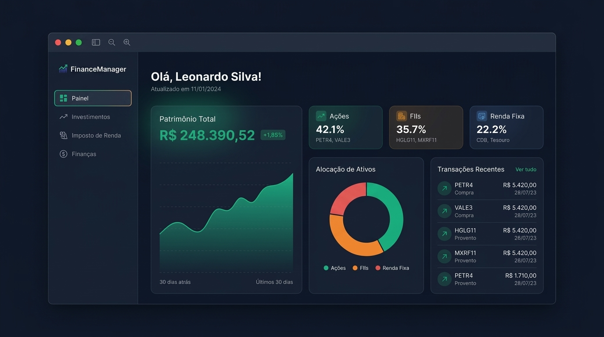
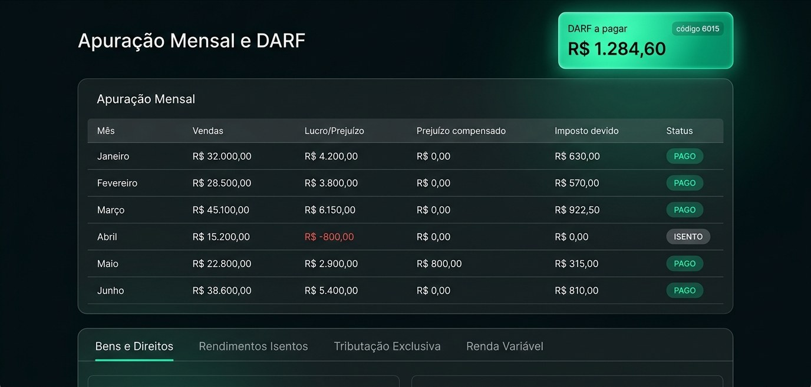
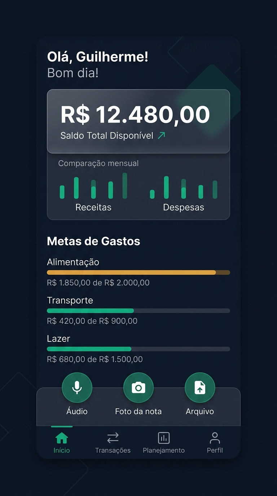

Preço médio automático
Atualizado a cada compra e venda, sem planilha.
Registre suas operações e o FinanceManager calcula o preço médio, separa swing trade, day trade e FIIs, compensa prejuízos e apura o valor do DARF mês a mês. No fim do ano, é só copiar para a declaração.

Tudo o que a Receita exige de quem investe em renda variável, organizado a partir das suas operações.
Atualizado a cada compra e venda, sem planilha.
Cada modalidade apurada separadamente, com a alíquota correspondente.
Considerada na apuração das vendas de ações no mês.
Prejuízos do mês e de meses anteriores compensados automaticamente.
O sistema apura o valor do DARF de cada mês para você acompanhar.
Bens e Direitos, Rendimentos Isentos, Tributação Exclusiva e Renda Variável, com cópia por campo e PDF.

Lance compras, vendas e proventos dos seus ativos.
Preço médio, lucro, prejuízo compensado e valor do DARF, mês a mês.
Use a cópia por campo ou baixe o PDF e confira com seu programa da Receita.
Ações, FIIs, ETFs, cripto, Tesouro e CDB com patrimônio e alocação em tempo real.
Dividendos, JCP e rendimentos registrados e prontos para a declaração.
Lance gastos por áudio ou foto da nota e acompanhe suas metas.
Interface pensada para usar no bolso, sem instalar nada.

Sim. Você cria a conta e usa o sistema sem custo.
Seus dados ficam protegidos por autenticação e conexão criptografada (HTTPS). Você acessa apenas as suas informações.
Não. O FinanceManager é uma ferramenta de apoio e não substitui orientação contábil. Confira os valores apurados antes de pagar o DARF ou entregar a declaração.
Ações, FIIs, ETFs, criptomoedas, Tesouro Direto e CDB.
O sistema apura o valor do DARF de cada mês. O pagamento é feito por você, com a guia gerada nos canais oficiais da Receita Federal.
Crie sua conta grátis e comece a registrar suas operações hoje.
Começar grátis